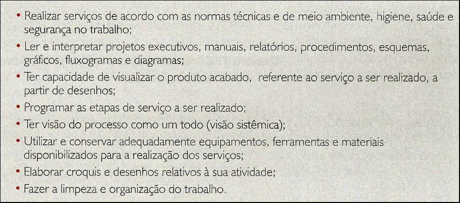
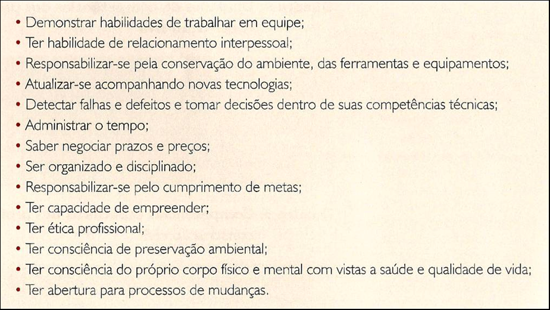

CAPÍTULO 2: FILOSOFIA, CONHECIMENTO E LÓGICA NA CONSTRUÇÃO CIVIL E MADEIRA/MOBILIÁRIO
O que é conhecimento? O que podemos saber? O que é verdade? O que faz de uma ação uma boa ação? O que é felicidade? O que é justiça? O que é a beleza? O que é o tempo? Tudo tem uma causa? O que é liberdade? Somos livres? Como podemos saber que somos livres? Qual é o sentido da vida? O que é a morte? ...
A Filosofia e suas principais áreas
Todas as perguntas que você leu acima têm uma característica em comum: elas são filosóficas. O objetivo deste capítulo é introduzi-lo à filosofia esclarecendo a natureza das questões filosóficas, apresentando um panorama das principais áreas da filosofia e analisando um problema filosófico que, além de ser interessante por si mesmo, servirá para que você compreenda boa parte da relevância do que você verá nos próximos capítulos.
Para um panorama do que é a filosofia e de quais são suas principais áreas, o vídeo abaixo é um ótimo começo (lembre-se de ativar as legendas).
Filosofia, conhecimento e lógica
A Filosofia é uma atividade teórica de natureza peculiar e de amplo alcance: dedica-se ao exame atento das questões mais fundamentais que nos fazemos, que não admitem solução nem pela via da observação e de experimentos, como admitem os problemas das ciências da natureza, nem por uma via estritamente formal, como admitem as questões da matemática, mas que os seres humanos – crianças, jovens ou adultos – naturalmente se colocam, às quais, em geral, eles não conseguem ficar indiferentes e que encontram sua origem em reflexões sobre os mais variados temas e áreas da experiência humana. Como observou o influente filósofo norte-americano Stanley Cavell (1926-), a filosofia pode ser entendida como
"uma disposição não para pensar em algo diferente daquilo em que os seres humanos em geral pensam, mas sim para aprender a pensar de forma não distraída sobre aquelas coisas em que os seres humanos em geral não conseguem deixar de pensar, ou, pelo menos, não conseguem evitar que lhes ocorra [...]; coisas como, por exemplo, se podemos conhecer o mundo tal como ele é em si mesmo, ou se os outros realmente conhecem a natureza de suas próprias experiências, ou se o bem e o mal são relativos, ou se não podemos agora estar sonhando que estamos acordados [...]: tais pensamentos são exemplos daquela característica disposição humana para se permitir fazer perguntas que ela mesma não pode responder satisfatoriamente. (CAVELL, Stanley. “The Thought of Movies”. In: Themes Out of School [Chicago:The University of Chicago Press, 1984], p.9)"
As questões da filosofia, portanto, ainda que não admitam soluções definitivas, não são externas ou alheias a nossa experiência cotidiana do mundo e de nós mesmos. Elas nascem, naturalmente, de nosso desejo de compreender o mundo e a nós mesmos.
Para nos restringirmos a um único e didático exemplo de questão filosófica que explicita essa caracterização geral da filosofia que acabamos de dar, por comparação com as ciências da natureza e com a matemática, tomemos um exemplo clássico da filosofia da matemática, uma área da filosofia que encontra sua origem na reflexão sobre os fundamentos da matemática: se um matemático, após concluir um longo cálculo repleto de sinais que designam números e operações numéricas, perguntar a si mesmo “o que é um número?”, ele terá ultrapassado os limites daquilo que pode ser solucionado pelos métodos da matemática, pois não existe, e não pode existir, um cálculo matemático que responda a essa pergunta, mas também terá ultrapassado os limites daquilo que pode ser resolvido pelos métodos das ciências da natureza, pois não existe observação ou experimento que possamos conceber para dar conta dessa questão. Por isso, essa questão é tipicamente filosófica. Uma questão filosófica que será de grande interesse para nós aqui é uma das perguntas centrais de uma das áreas da Filosofia que você viu no vídeo acima, a Epistemologia ou Teoria do Conhecimento. A questão é: “o que é conhecimento?”, ou “em que condições alguém está autorizado a dizer que sabe alguma coisa?”.
Antes de analisarmos diretamente essa questão, é preciso saber que, até hoje, os filósofos distinguiram três tipos de conhecimento. O conhecimento por contato (João conhece a Serra dos Carajás); o conhecimento prático ou “saber-fazer” (João sabe produzir uma placa de aço); e o conhecimento descritivo/proposicional ou “saber-que” (João sabe que uma placa de aço é produzida, basicamente, a partir de minério de ferro, carvão e cal). Se um indivíduo nunca esteve na Serra dos Carajás, ele não pode dizer que conhece a Serra dos Carajás. Por outro lado, se um indivíduo sabe apenas que o aço é produzido, basicamente, a partir de minério de ferro, carvão e cal, mas não sabe produzir uma placa de aço, então dizemos que ele tem um conhecimento descritivo sobre o aço, mas que ele não possui o conhecimento prático que João, no nosso exemplo, possui. No que segue, o tipo de conhecimento que nos interessará é o descritivo ou proposicional, pois é esse tipo de conhecimento que os filósofos mais procuraram, e ainda procuram, definir com precisão. Assim, quando falarmos em conhecimento, estaremos sempre falando em conhecimento descritivo ou proposicional.
Bem, muitos filósofos acreditam na seguinte tese: para que uma pessoa tenha conhecimento, é necessário que ela tenha uma crença verdadeira justificada, mas isso por si só não é suficiente. Por que é preciso ter uma crença, que essa crença seja verdadeira e, ainda, que ela possua alguma justificação, para que se transforme em conhecimento? E por que isso não é suficiente?
Em primeiro lugar, conhecimento exige crença, porque é absurdo dizer que sabemos de algo em que não acreditamos. Se alguém nos dissesse “eu sei que ontem fui ao cinema, mas não acredito nisso”, nós acharíamos isso muito estranho e, provavelmente, não saberíamos como reagir. Além disso, dizemos que conhecimento exige verdade. A razão para isso é que não existe “conhecimento falso”. Aqui é importante fazermos um esclarecimento: às vezes falamos que alguém tem “falso conhecimento”, mas isso simplesmente quer dizer que essa pessoa acha que sabe algo, mas na verdade não sabe. Por exemplo, muitos astrônomos anteriores ao polonês Nicolau Copérnico (1473-1543) acreditavam no geocentrismo, a tese de que o Universo gira em torno da Terra. É tentador dizer que essas pessoas tinham “falso conhecimento”, mas isso apenas quer dizer que elas acreditavam falsamente que sabiam que o Universo gira em torno da Terra. Elas não sabiam, porque não é verdade que o Universo gira em torno da Terra. Elas apenas pensavam que sabiam. Agora, a justificação é necessária porque não diríamos que uma crença que é verdadeira por sorte consiste em conhecimento. Podemos pensar em vários cenários assim: imaginemos que uma astróloga sem nenhum talento sobrenatural, acostumada a dar palpites sem fundamento, diz que vai haver um eclipse solar no dia 25 de março do ano que vem. Vamos supor que de fato ocorra um eclipse nesse dia. Certamente não diríamos que a astróloga sabia disso. Ela acertou, mas por sorte. Diferentemente, diríamos que um astrônomo que pode prever o eclipse com sucesso através de cálculos seguros tinha conhecimento. Para que uma crença verdadeira seja conhecimento, portanto, é preciso que ela tenha alguma justificação (um fundamento, uma razão, algo que quem alega conhecimento possa articular em sua defesa).
Ter uma crença verdadeira e justificada é, portanto, condição necessária para o conhecimento. No entanto, isso não é condição suficiente porque podemos imaginar que alguém tenha uma crença justificada, mas que seja verdadeira em razão da sorte, ou seja, que não se qualifica como conhecimento. Vamos supor que João diga para todo mundo na sala de aula que ele correu uma maratona. Ele conta como foi o percurso, em que posição chegou e até mostra a regata de participante com seu nome. Vamos imaginar que eu acredite que “alguém na sala correu uma maratona”, e, sem razões para duvidar de João, estou justificado em fazê-lo. Mas João se enganou, ele participou de uma caminhada. Agora, imaginemos que há alguém na sala que de fato correu uma maratona, digamos, Maria. A minha crença (“alguém na sala correu uma maratona”) é verdadeira e justificada, mas só por acaso, porque Maria nunca falou nada a respeito. Minha crença claramente não resulta em conhecimento.
Visto que ter uma crença verdadeira justificada é condição necessária, mas não é suficiente, para termos conhecimento, ou bem é preciso adicionar mais uma condição, como “a justificação não pode implicar uma crença falsa” ou bem é preciso rever o modo como articulamos os conceitos de crença, verdade e justificação. Uma ideia nesse caso seria a de que a justificação deveria relacionar de modo virtuoso a verdade e a crença, eliminando possibilidades razoáveis de engano e dúvidas plausíveis. A solução para essa etapa final da questão da qual partimos (“o que é conhecimento?”) permanece, no entanto, em aberto.
Caso você queira compreender melhor a análise desse problema clássico da Filosofia, aí vão duas boas dicas:
O vídeo 7 do canal Crash Course Philosophy: “The Meaning of Knowledge” – lembre-se de ativar as legendas:
Entre os vários resultados da análise que fizemos acima, está o seguinte: a justificação é uma condição necessária para que haja conhecimento. Dito de outro modo, não basta, para que alguém possa dizer que tem conhecimento, que essa pessoa tenha uma crença verdadeira. É preciso que ela também esteja justificada a ter essa crença. Agora, tomemos o seguinte exemplo de justificação para minha crença verdadeira de que Marte é um planeta: Marte é um planeta, porque todas as coisas que giram ao redor da Terra são planetas, e Marte gira ao redor da Terra. Trata-se de uma boa justificação? Como todos nós sabemos, tanto é falso que todas as coisas que giram ao redor da Terra são planetas – a Lua, assim como muitos satélites artificiais, gira ao redor da Terra e não é um planeta – quanto é falso que Marte gira ao redor da Terra – Marte, como nós sabemos, gira ao redor do Sol. Não se trata, portanto, de uma boa justificação porque as proposições com as quais eu pretendo justificar minha crença de que Marte é um planeta são falsas, e, portanto, não pode ser porque elas são verdadeiras que minha crença é verdadeira. O que nós concluímos, então, é que uma boa justificação deve partir de proposições verdadeiras.
Tomemos, agora, este outro exemplo de justificação: Marte é um planeta, porque nenhum planeta gira ao redor da Terra, e Marte não gira ao redor da Terra. Trata-se de uma boa justificação? Ao contrário do exemplo anterior, eu justifico minha crença de que Marte é um planeta por meio de afirmações verdadeiras. Por esse único motivo, podemos dizer que se trata de uma boa justificação para minha crença? Parece que não se trata de uma boa justificação, mas qual é o problema com ela? Ela se apoia em duas afirmações verdadeiras para chegar a uma terceira afirmação verdadeira. Onde, então, está o problema? O ponto é que, embora sejam verdadeiras, as duas últimas afirmações não implicam a primeira, ou seja, a primeira não é uma consequência das duas últimas: podemos aceitar que (1) nenhum planeta gira ao redor da Terra e que (2) Marte não gira ao redor da Terra sem que isso nos obrigue a aceitar que Marte é um planeta. Se essas duas afirmações fossem boas razões para acreditarmos que Marte é um planeta, então a afirmação “meu cachorro Frederico é um planeta” teria de ser igualmente verdadeira, já que meu cachorro Frederico também não gira ao redor da Terra. A gente pode dizer, então, que o problema com essa justificação não diz respeito à verdade das afirmações, mas à estrutura dela, e é na análise da estrutura de um raciocínio que a Lógica, que você estudará nos próximos capítulos, pode nos ajudar.
Enquanto “estudo dos métodos e princípios usados para se distinguir o raciocínio correto do incorreto” (COPI, 1978), a lógica nos fornece métodos que garantem que não chegaremos ao falso se partirmos do verdadeiro. Assim, a lógica nos ajuda tanto na justificação de crenças que já possuímos quanto na formação de novas crenças a partir daquelas que já possuímos. A questão de saber se os enunciados dos quais partimos em uma inferência lógica – isto é, na tentativa de extrair um enunciado a partir de outros – são verdadeiros não cabe à lógica. Mas cabe à lógica nos mostrar em quais condições não chegaremos à afirmação de uma falsidade caso os enunciados dos quais partimos forem verdadeiros – independentemente da questão de saber se eles são ou não, de fato, verdadeiros.
Estabelecendo Conexões coma Indústria
Dê uma olhada nas seguintes listas de competências profissionais demandadas na indústria da construção civi e na de madeira/mobiliário .
Competências específicas dos profissionais operacionais da construção civil
Competências de gestão dos profissionais operacionais da construção civil
Competências básicas requeridas dos colaboradores da produção das empresas do setor madeireiro e do mobiliário do Paraná (%)
Uma pergunta que você pode se fazer é para que estudar filosofia? Quais competências ela poderia me ajudar a desenvolver que possam ter um impacto na minha carreira profissional?
Longe de ser um campo abstrato e sem serventia, a filosofia está entre os cursos com maiores efeitos práticos. Estudar filosofia desenvolve uma série de competências importantes para a vida profissional e pessoal. O estudo da filosofia desenvolve o pensamento crítico, detalhista, aprofundado e com clareza. Ela aprimora principalmente o pensamento lógico-matemático que possibilita que enfrentemos desafios de qualquer natureza com precisão e foco, raciocinemos bem em situações complicadas. Além disso a filosofia nos treina para debater com as pessoas, com um diretor de empresa ou com um gerente, de maneira persuasiva.
Ou seja, no fim das contas, se você não vai se tornar um filósofo, o que importa são essas ferramentas que a filosofia desenvolve em seu cérebro. Elas estão na base de uma série de capacidades que estão listadas nos quadros da construção civil e do setor mobilário/madereiro. No próximo capítulo, voltaremos a este tema.
Ação e reflexão
1) Qual é a raiz etimológica da palavra ‘Filosofia’? O que essa palavra significava, na Grécia Antiga, onde ela surgiu?
2) Quais são as principais áreas da Filosofia? O que elas estudam?
3) O que é Filosofia hoje? O que caracteriza um problema filosófico e o distingue dos problemas das ciências da natureza e da matemática?
4) Quais são os três tipos de conhecimento apresentados no capítulo? Para cada um desses três tipos de conhecimento, dê um exemplo de conhecimento/saber.
5) Por que o conhecimento descritivo/proposicional envolve ter uma crença?
6) Por que, para que se tenha um conhecimento desse tipo, é necessário não apenas que se tenha uma crença, mas que essa crença seja também verdadeira?
7) Por que, além de verdadeira, a crença precisa estar justificada?
8) Por que não é suficiente que se tenha uma crença verdadeira justificada?
O que aprendi
Neste capítulo, você aprendeu que:
1) Quais são as principais áreas da filosofia.
2) As questões da filosofia nascem do nosso desejo de compreender o mundo e a nós mesmos.
3) Quais são os três tipos de conhecimento.
4) O conhecimento proposicional é ter uma crença verdadeira justificada.